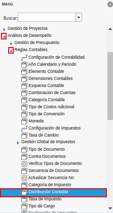
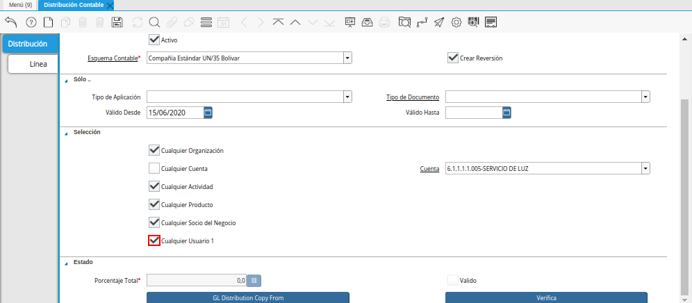

Registro de Distribución Contable
Para ejemplificar el procedimiento de distribución contable, se tiene el documento por pagar “1000110” con monto total de “2.500.000,00”.
Imagen 1. Factura por Pagar

Ubique y seleccione en el menú de ADempiere, la carpeta “Análisis de Desempeño”, luego seleccione la carpeta “Reglas Contables”, por último seleccione la ventana “Distribución Contable”.

Imagen 2. Menú de ADempiere
Distribución Contable
Podrá visualizar la carpeta “Distribución Contable”, con los diferentes registros de distribución que se encuentran en ADempiere.
Imagen 3. Ventana Distribución Contable

Seleccione el icono “Registro Nuevo”, ubicado en la barra de herramientas de ADempiere, para crear un nuevo registro de distribución.
Imagen 4. Icono Registro Nuevo de la Ventana Distribución Contable
Seleccione en el campo “Organización”, la organización para la cual esta realizando la distribución.
Imagen 5. Campo Organización de la Ventana Distribución Contable
Introduzca en el campo “Nombre”, el nombre de referencia correspondiente al registro de distribución que esta realizando.
Imagen 6. Campo Nombre de la Ventana Distribución Contable
Introduzca en el campo “Descripción”, una breve descripción correspondiente al registro de distribución que esta realizando.
Imagen 7. Campo Descripción de la Ventana Distribución Contable
Seleccione en el campo “Esquema Contable”, el esquema que será utilizado para la distribución que esta realizando.
Imagen 8. Campo Esquema Contable de la Ventana Distribución Contable
El checklist “Crear Reversión”, indica que el movimiento de reversión se creará.
Imagen 9. Checklist Crear Reversión de la Ventana Distribución Contable
Warning
Si se inhabilita el checklist, el movimiento original será borrado.
Seleccione en el campo “Tipo de Aplicación”, el tipo de aplicación que será utilizado para la distribución que esta realizando.
Imagen 10. Campo Tipo de Aplicación de la Ventana Distribución Contable
Seleccione el tipo de documento en el campo “Tipo de Documento”, la selección de este define el comportamiento del documento que se esta elaborando, dicho comportamiento se encuentra explicado en el documento Tipo de Documento elaborado por ERPyA.
Imagen 11. Campo Tipo de Documento de la Ventana Distribución Contable
Seleccione en el campo “Válido Desde”, la fecha de inicio de la distribución que esta realizando.
Imagen 12. Campo Válido Desde de la Ventana Distribución Contable
Seleccione en el campo “Válido Hasta”, la fecha de finalización de la distribución que esta realizando.
Imagen 13. Campo Válido Hasta de la Ventana Distribución Contable
El checklist “Cualquier Organización”, al estar tildado aplica la distribución contable a todas las organizaciones.
Imagen 14. Checklist Cualquier Organización de la Ventana Distribución Contable
Al destildar el checklist “Cualquier Organización”, se habilita el campo “Organización” para aplicar la distribución contable sólo a la organización que sea seleccionada en dicho campo.
Imagen 15. Campo Organización del Checklist Cualquier Organización de la Ventana Distribución Contable
El checklist “Cualquier Cuenta”, al estar tildado aplica la distribución contable a todas las cuentas.
Imagen 16. Checklist Cualquier Cuenta de la Ventana Distribución Contable
Al destildar el checklist “Cualquier Cuenta”, se habilita el campo “Cuenta” para aplicar la distribución contable sólo a la cuenta que sea seleccionada en dicho campo.
Imagen 17. Campo Cuenta del Checklist Cualquier Cuenta de la Ventana Distribución Contable
El checklist “Cualquier Actividad”, al estar tildado aplica la distribución contable a todas las actividades.
Imagen 18. Checklist Cualquier Actividad de la Ventana Distribución Contable
Al destildar el checklist “Cualquier Actividad”, se habilita el campo “Actividad” para aplicar la distribución contable sólo a la actividad que sea seleccionada en dicho campo.
Imagen 19. Campo Actividad del Checklist Cualquier Actividad de la Ventana Distribución Contable
El checklist “Cualquier Producto”, al estar tildado aplica la distribución contable a todos los productos.
Imagen 20. Checklist Cualquier Producto de la Ventana Distribución Contable
Al destildar el checklist “Cualquier Producto”, se habilita el campo “Producto” para aplicar la distribución contable sólo al producto que sea seleccionado en dicho campo.
Imagen 21. Campo Producto del Checklist Cualquier Producto de la Ventana Distribución Contable
El checklist “Cualquier Socio del Negocio”, al estar tildado aplica la distribución contable a todos los socios del negocio.
Imagen 22. Checklist Cualquier Socio del Negocio de la Ventana Distribución Contable
Al destildar el checklist “Cualquier Socio del Negocio”, se habilita el campo “Socio del Negocio” para aplicar la distribución contable sólo al socio del negocio que sea seleccionado en dicho campo.
Imagen 23. Campo Socio del Negocio del Checklist Cualquier Socio del Negocio de la Ventana Distribución Contable
El checklist “Cualquier Usuario 1”,

Imagen 24. Checklist Cualquier Usuario 1 de la Ventana Distribución Contable
Al destildar el checklist “Cualquier Usuario 1”, se habilita el campo “Centro de Costos” para aplicar la distribución contable sólo al centro de costos que sea seleccionado en dicho campo.
Imagen 25. Campo Centro de Costos del Checklist Cualquier Usuario 1 de la Ventana Distribución Contable


Note
Recuerde guardar el registro de los campos de la pestaña antes de posicionarse en otra pestaña de la misma ventana, seleccionando el icono “Guardar Cambios” ubicado en la barra de herramientas de ADempiere.
Línea
Seleccione la pestaña “Línea”, para crear los registros de distribución requeridos.
Imagen 26. Pestaña Línea de la Ventana Distribución Contable
Introduzca en el campo “Descripción”, una breve descripción correspondiente al registro de porcentaje de distribución que esta realizando.
Imagen 27. Campo Descripción de la Pestaña Línea de la Ventana Distribución Contable
Introduzca en el campo “Porcentaje”, el porcentaje de distribución correspondiente al registro que esta realizando.
Imagen 28. Campo Porcentaje de la Pestaña Línea de la Ventana Distribución Contable
Introduzca en el campo “Débito Contabilizado”, el monto de débito contabilizado correspondiente al registro que esta realizando.
Imagen 29. Campo Débito Contabilizado de la Pestaña Línea de la Ventana Distribución Contable
Introduzca en el campo “Crédito Contabilizado”, el monto de crédito contabilizado correspondiente al registro que esta realizando.
Imagen 30. Campo Crédito Contabilizado de la Pestaña Línea de la Ventana Distribución Contable
El checklist “Signo de cuenta invertida”,
Imagen 31. Checklist Signo de Cuenta Invertida de la Pestaña Línea de la Ventana Distribución Contable
Note
Al seleccionar el checklist “Signo de cuenta invertida”, no se habilita ningún campo.
El checklist “Sobrescribir tipo de publicación”, Sobreescribe el tipo de publicación con el valor especificado.
Imagen 32. Checklist Sobrescribir Tipo de Publicación de la Pestaña Línea de la Ventana Distribución Contable
Al seleccionar el checklist “Sobrescribir tipo de publicación”, se habilita el campo “Tipo de Aplicación” para aplicar la distribución contable sólo al tipo de aplicación que sea seleccionada en dicho campo.
Imagen 33. Campo Tipo de Aplicación del Checklist Sobrescribir Tipo de Publicación de la Pestaña Línea de la Ventana Distribución Contable
El checklist “Sobreescribe Organización”, aplica la distribución contable a todas las organizaciones.
Imagen 34. Checklist Sobreescribe Organización de la Pestaña Línea de la Ventana Distribución Contable
Al seleccionar el checklist “Sobreescribe Organización”, se habilita el campo “Organización” para aplicar la distribución contable sólo a la organización que sea seleccionada en dicho campo.
Imagen 35. Campo Organización del Checklist Sobreescribe Organización de la Pestaña Línea de la Ventana Distribución Contable
El checklist “Sobreescribe la cuenta”, aplica la distribución contable a todas las cuentas.
Imagen 36. Checklist Sobreescribe la Cuenta de la Pestaña Línea de la Ventana Distribución Contable
Al seleccionar el checklist “Sobreescribe la cuenta”, se habilita el campo “Cuenta” para aplicar la distribución contable sólo a la cuenta que sea seleccionada en dicho campo.
Imagen 37. Campo Cuenta del Checklist Sobreescribe la Cuenta de la Pestaña Línea de la Ventana Distribución Contable
El checklist “Sobreescribe la Actividad”, aplica la distribución contable a todas las actividades.
Imagen 38. Checklist Sobreescribe la Actividad de la Pestaña Línea de la Ventana Distribución Contable
Al seleccionar el checklist “Sobreescribe la Actividad”, se habilita el campo “Actividad” para aplicar la distribución contable sólo a la actividad que sea seleccionada en dicho campo.
Imagen 39. Campo Actividad del Checklist Sobreescribe la Actividad de la Pestaña Línea de la Ventana Distribución Contable
El checklist “Sobreescribe Producto”, aplica la distribución contable a todos los productos.
Imagen 40. Checklist Sobreescribe Producto de la Pestaña Línea de la Ventana Distribución Contable
Al seleccionar el checklist “Sobreescribe Producto”, se habilita el campo “Producto” para aplicar la distribución contable sólo al producto que sea seleccionado en dicho campo.
Imagen 41. Campo Producto del Checklist Sobreescribe Producto de la Pestaña Línea de la Ventana Distribución Contable
El checklist “Sobreescribe Socio del Negocio”, aplica la distribución contable a todos los socios del negocio.
Imagen 42. Checklist Sobreescribe Socio del Negocio de la Pestaña Línea de la Ventana Distribución Contable
Al seleccionar el checklist “Sobreescribe Socio del Negocio”, se habilita el campo “Socio del Negocio” para aplicar la distribución contable sólo al socio del negocio que sea seleccionado en dicho campo.
Imagen 43. Campo Socio del Negocio del Checklist Sobreescribe Socio del Negocio de la Pestaña Línea de la Ventana Distribución Contable
El checklist “Sobreescribe Usuario 1”,
Imagen 44. Checklist Sobreescribe Usuario 1 de la Pestaña Línea de la Ventana Distribución Contable
Al seleccionar el checklist “Sobreescribe Usuario 1”, se habilita el campo “Centro de Costos” para aplicar la distribución contable sólo al centro de costos que sea seleccionado en dicho campo.
Imagen 45. Campo Centro de Costos del Checklist Sobreescribe Usuario 1 de la Pestaña Línea de la Ventana Distribución Contable
El checklist “Sobreescribe Usuario 3”,
Imagen 46. Checklist Sobreescribe Usuario 3 de la Pestaña Línea de la Ventana Distribución Contable
Note
Al seleccionar el checklist “Sobreescribe Usuario 3”, no se habilita ningún campo.
El checklist “Sobreescribe Usuario 4”,
Imagen 47. Checklist Sobreescribe Usuario 4 de la Pestaña Línea de la Ventana Distribución Contable
Note
Al seleccionar el checklist “Sobreescribe Usuario 4”, no se habilita ningún campo.
Regrese a la pestaña “Distribución” y ubique el campo “Porcentaje Total”, ubicado en la parte inferior izquierda de la misma. En este campo podrá visualizar el porcentaje total de todas las distribuciones definidas en cada uno de los registros de la pestaña “Línea”.
Imagen 48. Pestaña Distribución Contable y Campo Porcentaje Total


Consulta de Distribución Contable Aplicada
Ubique la factura por pagar “1000110” con monto total de “2.500.000,00”, expuesta anteriormente al principio del presente material y seleccione la opción “Contabilizado” ubicado en la parte inferior de la ventana “Documento por Pagar”.
Imagen 49. Opción Contabilizado de la Factura por Pagar

Podrá visualizar el asiento de la distribución de la siguiente manera
Imagen 50. Asiento Contable de Distribución